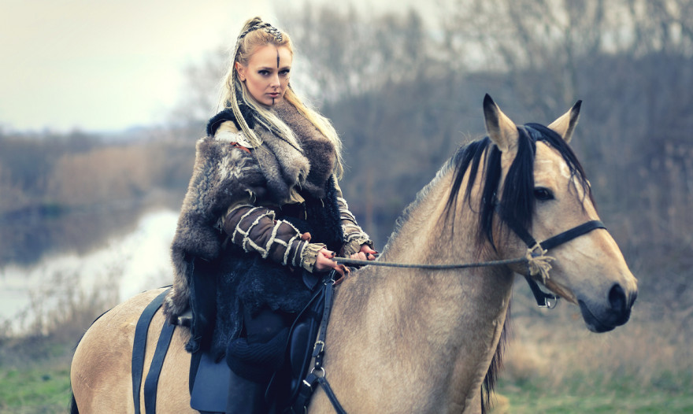
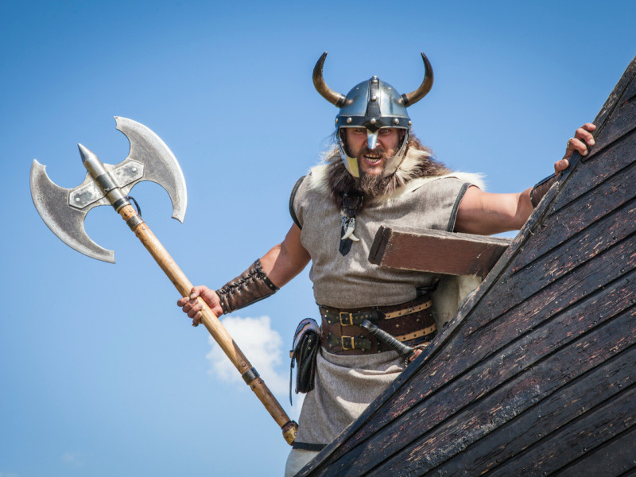
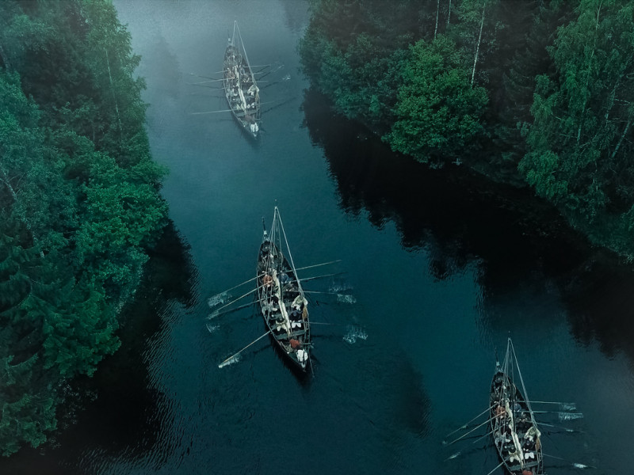
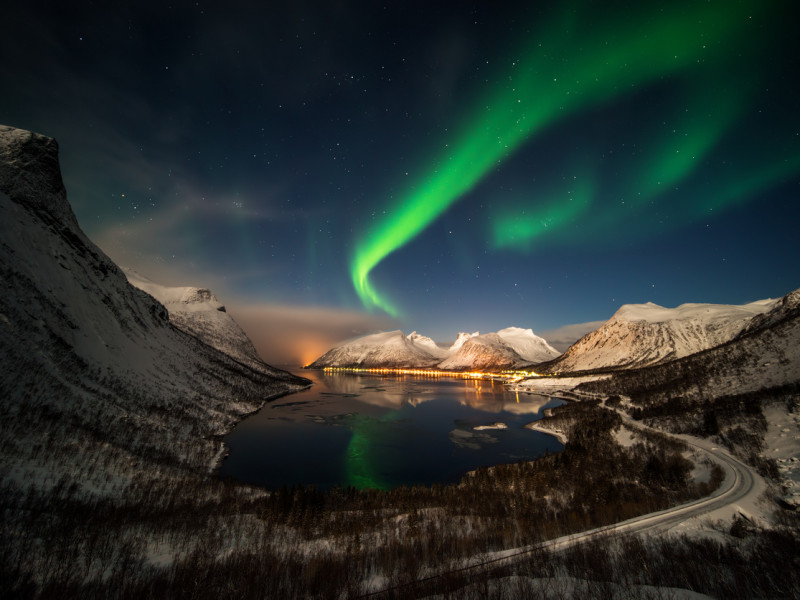

Historia Dos Vikings

Conheça os Vikings: uma cultura ainda presente na Escandinávia
A cultura viking é muito popular na literatura, na TV e no cinema. Mas nem sempre ela é retratada em toda a sua beleza e complexidade. Muito mais do que bárbaros, a herança dessa civilização está marcada em toda a Escandinávia e nas terras por onde estiveram.
Vale a pena saber mais sobre os vikings e sua saga na antiguidade. Um povo que conheceu e explicou, à sua maneira, o fenômeno da Aurora Boreal.
Quem foram os vikings?

Os vikings foram uma antiga civilização originária da Escandinávia, região do norte da Europa que compreende hoje Noruega, Suécia e Dinamarca. Entre os séculos VIII e XI, esse povo se expandiu para muitos outros lugares, deixando suas marcas por onde esteve, sobrevivendo da agricultura, do artesanato e principalmente do comércio marítimo.
Eram governados por um rei. Apesar da sua autoridade, pessoas de outros extratos sociais — inclusive os homens livres, aqueles que não ocupavam cargos ou posições aristocráticas — também podiam participar dos debates e tomadas de decisões.
Os nobres desfrutavam de certas regalias, por isso muitos deles detinham poder de comando sobre territórios e parte da população viking. Eles tinham suas tribos independentes, e as invasões a terras de outros povos, na maioria das vezes, eram coordenadas pelos seus chefes, sem que a coroa soubesse.
Dentro da sociedade viking, a colaboração era mútua, e as elaborações das leis e punições de criminosos eram feitas por eles mesmos em grandes assembleias, independentemente do rei.
Grandes viajantes

Retratados na História como invasores de terras e saqueadores de pequenos patrimônios, na verdade os vikings baseavam suas atividades econômicas nos mares, explorando por meio de navegações novos territórios com o objetivo de colonizar terras, criar relações comerciais e, os mais bárbaros, sim, saquear e pilhar.
Ou seja, eles eram desbravadores e, assim como muitos povos da antiguidade, queriam conquistar cada vez mais terras. Começaram sua principal invasão na Bretanha, atual Reino Unido, local onde ocorreu uma grande guerra que resultou na tomada de parte desse território, tornando-o uma extensão viking.
E não parou por aí. Eles prosseguiram para as terras escocesas e, à medida que adquiriam mais experiências com as navegações, almejavam ir mais longe, alcançando terras onde hoje são a Irlanda, Alemanha, França e Rússia. Posteriormente, desbravaram mares mais gelados, chegando às Ilhas Faroé, Islândia e Groenlândia, esta última uma grande ilha na América do Norte.
Há registros inclusive de que os vikings foram os primeiros europeus a pisar nas Américas, lá pelo ano 1000 d.C, ou seja, cerca de cinco séculos antes de Cristóvão Colombo. Eles chegaram ao Canadá, estabelecendo uma pequena colônia por um breve período.
Apesar da fama de saqueadores que adoravam uma batalha sangrenta, os vikings nem sempre eram violentos. Também não era sempre que havia resistência por parte dos povoados invadidos por eles. Os ataques e a Era Viking chegaram ao fim com a ascensão do cristianismo em sua própria cultura e com o declínio da sua civilização. Mas deixaram suas marcas na história da humanidade, com uma cultura que ainda resiste na região da Escandinávia e no imaginário popular.
Thor, Odin e a Aurora Boreal

Thor e Odin ganharam muita popularidade após os filmes de super-heróis que conquistaram bilheterias expressivas no mundo. Mas, antes disso, eles são divindades vikings cultuadas por um povo antigo e mitos fundadores de uma civilização.
Os vikings eram politeístas e sua mitologia envolve muitas histórias de lutas entre os deuses. Odin era o “Deus dos deuses”, e Thor, o “Deus do Trovão”, o mais popular. Mas só sabemos disso por textos apócrifos e por meio do historiador nórdico Snorri Sturluson, que por volta de 1220 escreveu a Edda Prosa, relatando o conjunto de crenças desse povo. Os vikings não tinham sacerdotes ou livros sagrados, toda a sua religiosidade era passada de forma oral.
Odin, o pai de todos, era o mais poderoso dos deuses, por isso tinha suas guerreiras, as mensageiras do seu exército, conhecidas como Valquírias.
“Quando as Valquírias cavalgavam pelos campos celestes, suas armaduras reluzentes brilhavam e iluminavam os céus nórdicos, produzindo as belas Luzes Nórdicas.”
Esta era a explicação dos vikings para a Aurora Boreal. O fenômeno celeste marcante no Polo Norte era a luz refletida nos escudos e armaduras das guerreiras de Odin, que percorriam os céus com seus corcéis em busca dos melhores guerreiros para as batalhas - uma, entre tantas histórias e lendas do folclore da Era dos Vikings, uma cultura rica e intrigante que habitou uma grande extensão de território no norte da Europa séculos atrás.
Se você ficou inspirado e deseja conhecer mais sobre essa cultura e os impressionantes cenários nórdicos, pode começar pela premiada série Vikings, disponível na Netflix. O drama histórico criado e escrito por Michael Hirst é inspirado nas sagas do viking Ragnar Lodbrok, um dos mais conhecidos heróis nórdicos lendários e chamado de flagelo da Inglaterra e da França.
A Borealis Expedições trouxe a história dos vikings aqui para mostrar que, assim como eles, somos bons desbravadores de territórios nórdicos, sempre em busca da máxima exuberância que as luzes das Auroras Boreais podem nos proporcionar.